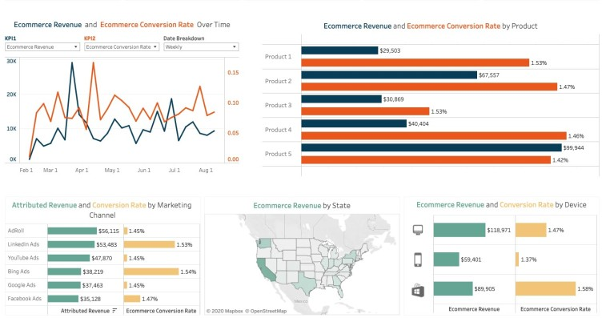
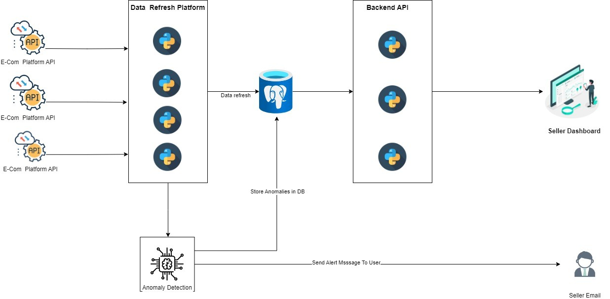

Ecom360: Navigating E-Commerce with Precision
Introduction:
In this data-driven journey, we embark on the quest to harness vital E-Commerce metrics that drive revenue and business success. Our challenges revolve around deciphering revenue highlights, product sales trends, order management, and inventory control. Join us as we delve into the intricacies of our solution, an integrated platform that seamlessly retrieves, organizes, and analyzes data from E-Commerce APIs. From revenue insights to user-friendly interfaces and robust database architecture, we present a comprehensive guide to unlocking the power of data-driven decision-making in the realm of E-Commerce.
Challenge:
- Revenue Highlights
- Number of Selling Products (Daily, Monthly, Yearly)
- Number of Returned and Cancelled Products (Daily, Monthly, Yearly)
- Gross Margins
- Top Selling Product (Daily, Monthly, Yearly)
- Bottom Selling Product (Daily, Monthly, Yearly)
- Number of Unshipped Orders
- Top Returning Product (Daily, Monthly, Yearly)
- Bottom Returning Product (Daily, Monthly, Yearly)
- Inventory Availability in the Warehouse
Solution:

- Data Retrieval: The data retrieval process involves a direct interaction between the platform's backend and E-Commerce APIs. The platform interfaces with various Seller API endpoints to retrieve an extensive range of data, encompassing listings, orders, shipping details, buyer and seller profiles, taxation specifics, and pricing components.
- API Interaction and Data Fetching: During this stage, the platform's backend dynamically interacts with the appropriate Seller API endpoints. It meticulously queries relevant URLs based on distinct data categories such as order data and listing data. The data retrieval process spans from the maximum date available in the database to the current date, ensuring a comprehensive and up-to-date data set. The retrieved data is intelligently organized and structured, facilitating seamless integration with the platform's database system. This approach not only ensures data accuracy but also enhances the efficiency of subsequent data processing and analytics. The result is a robust and well-rounded collection of data that forms the foundation for insightful analytics and reporting within the integrated platform.
- Data Storage: The retrieved data is meticulously organized and stored within a structured database system, ensuring data integrity and efficient retrieval.
- Analytical Insights: Utilizing the collected data, the platform generates a suite of insightful analytics, including key revenue indicators, product sales trends, return and cancellation patterns, gross margins, and inventory status.
- UI Deployment: A user-friendly and intuitive user interface (UI) is developed and deployed on an Container based Approach, accessible through a designated custom domain.
- Database Integration: The UI is seamlessly linked with a Postgres database, establishing a secure and reliable connection for data storage and retrieval.
- Database Architecture: A sophisticated and well-designed database architecture is engineered to handle the diverse and voluminous data associated with multiple customers.
Workflow:

Conclusion:
The successful implementation of this platform integration with Seller APIs addresses the challenge of retrieving, organizing, and analyzing a wide array of data for enhanced business insights. By providing a user-friendly interface, coupled with a robust database architecture, the platform empowers users to access and leverage valuable data-driven analytics. This documentation serves as a comprehensive guide to understanding the intricacies of the integration and its underlying architecture.